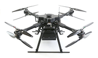
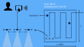

|
Airborne
Orangutan Tracking, a project with International Animal Rescue. As
part of
an
animal welfare and ecological research project, orangutans in Borneo are implanted with VHF
beacons
so
they can be followed through the jungle. Unfortunately the tracking signal has a limited range
and
manually
navigating the jungle to pick up signals is extremely cumbersome. Better coverage can be
obtained by
flying above the canopy with a drone mounted receiver and homing system. |
|
Image Processing. An project for the University
of
Cambridge where the problem was to automatically detect and extract printers ornaments
from
millions of scanned 16th, 17th, and 18th century books. |
| 
|
Airborne GPR. In many parts of the world unexploded ordnance and landmines
still
pose a
significant danger to the local population. A huge variety of systems and sensors have been
developed to
tackle the project of landmine detection yet the clearing rate is still fairly low and the risks
remain
very real. In this project I worked on an integrated UAV based Ground Penetrating Radar
system
for
use in landmine detection as well as utilities, law enforcement, etc. The worlds first system of its kind. |
|
GPR-ML. Given a stream of Ground Penetrating Radar (GPR) data in the context of
demining (see previous project) there is still
the
significant challenge of identifying landmines amongst the subsurface clutter. This project was
about
tackling
the challenge through the use of real and simulated data and exploiting recent advances in
(deep)
machine learning. |
 |
Anomaly Detection. A project with a Fortune 500 engineering company where the
objective
is to
find anomalies and recurring patterns in event streams and explore their predictive power. |
| 
|
Swarming Systems. A project in collaboration with Bristol
Robotics Lab whose aim is to demonstrate a true swarming capability (i.e., not
multi-robot)
for
applications that involve maximizing area coverage. |
|
|
Accurate Drone Positioning. In any drone application good positioning or
localization
is
key in
order for the sensor data to be processed sensibly. There are many ways of estimating position.
This
project looked at integrating RTK and monocular visual SLAM into a custom drone platform. |
|
Airborne EMI sensor. The two main sensor modalities used to detect landmines
are
Ground Penetrating Radar (GPR)
and EMI (i.e., metal detector). This project explored the feasibility of having a UAV mounted
active
or
passive EMI sensor. A working prototype was built, to my knowledge the first in the world.
|
|
|
While a scientist at BAE Systems Research I worked on a wide range of projects. Unfortunately,
due
to
the nature of the work there is little I can share publicly.
Projects were typically related to my specific areas of interest. This includes data fusion,
big
data
analysis and visualization, machine learning (with deep learning in particular), Integrated
Vehicle
Health Management (IVHM) systems, computational engineering, and autonomous systems.
|
|
Orchid. A collaboration between the
University
of Southampton, University of Oxford, University of Nottingham, The Australian Center for Field
Robotics, BAE Systems, Secure Meters UK, and Rescue Global.
Rather than issuing instructions to passive machines, humans and software agents will
continually
and
flexibly establish a range of collaborative relationships with one another, forming
human-agent
collectives (HACs) to meet their individual and collective goals.
|
|
Human Mobility Analysis: It is well known that humans generally follow very
regular
and
predicable mobility patterns, both spatially and temporally. Lots of work has looked at
exploiting
and
predicting those patterns but much less so on looking specifically at departures from those
regular
patterns. What can we learn from those departures from routine? How predictable are they?
This work was a collaboration with the Agents,
Interaction,
and Complexity group at University of Southampton. The approach was based around a
Bayesian
framework to analyse an individual’s mobility patterns and identify departures from routine.
It
is
able to detect both spatial and temporal departures from routine based on heterogeneous
sensor
data
(GPS, Cell Tower, social media, ..) and outperforms existing state-of-the-art predictors.
Applications include mobile digital assistants (e.g., Google Now), mobile advertising (e.g.,
LivingSocial), and crowdsourcing physical tasks (e.g., TaskRabbit).
|
|
|
GALLOP: Genetic Algorithms for Linguistic Learner Optimization is a python
package I developed for
feature selection and hyperparameter optimization for Natural Language Processing models.
Gallop provides a custom genetic algorithm that can be used to optimize the
hyperparameters of models such as Timbl, SVMLight, and CRF++. Gallop also
supports
evolutionary selection of features or feature groups and can be run on a standalone machine
or Torque compatible
cluster.
|
|
|
DECODE: Decision Environment for Complex Design Evaluation. An ESPRC funded research project where we developed an
agile
UAV
design environment and manufacturing
process. Close ties with the Microsoft
Institute for High
Performance Computing, Rolls-Royce, Airbus, and the BBC.
Multiple aircraft have been built and flown successfully and our work has been covered
extensively by the media. Eventually evolved into the 2Seas 3i EU project.
|
|
|
The SULSA project was about designing, building, and flying the worlds
first fully 3D printed aircraft. It was printed in just 4 separate pieces using selective laser sintering
and
assembled without any screws or traditional fastners. Its elliptical wings were modeled after
the
iconic Spitfire and the whole
geometry
generated programmatically. |
|
|
MDOW was a project in collaboration with Airbus
that took a non-conventional view to solving the Multidisciplinary
Design
Optimization problem in aircraft design. The fundamental being to use an expert system
to
coordinate the activities of the domain level optimizers instead of a numeric optimizer. This
allowed
for more traceability and a human-in-the-loop. |
|
|
The Operational MOdel Order REduction for Nanoscale IC Electronics
(O-MOORE-NICE)
project was a Transfer of Knowledge collaboration between the Technical University of Chemnitz,
University of Antwerp, Technical University of Eindhoven and NXP
Semiconductors. It involved developing accurate metamodels for integrated circuits.
Topics
studied included parameterization, parameter screening, nonlinearity, and combination of
approaches
from
optimization and statistics. |
|
|
h2O was a research project at Emory University,
Atlanta and part of the larger HARNESS
project
with The University of Tennessee and Oak Ridge National Laboratory. HARNESS (Heterogeneous
Adaptive
Reconfigurable Networked SyStem) was an experimental Metacomputing System aiming at providing a
highly
dynamic, fault-tolerant computing environment for high performance computing applications. |


{kind=link}